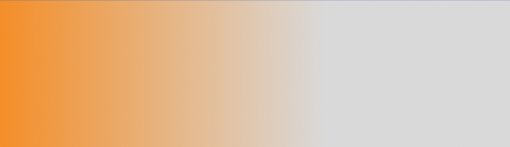
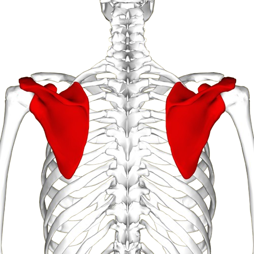
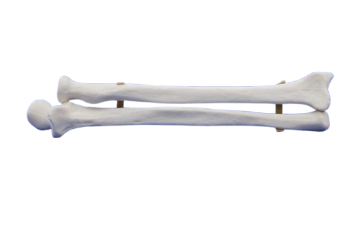
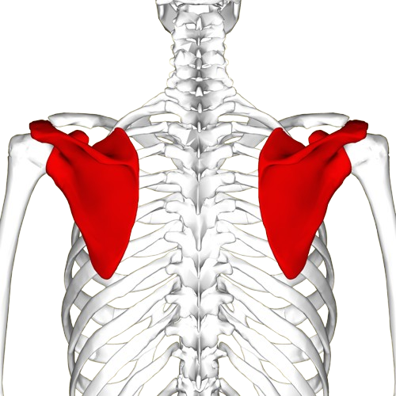
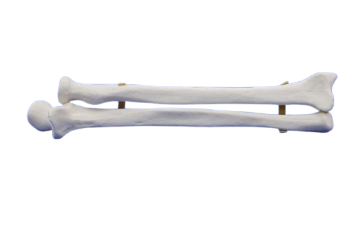
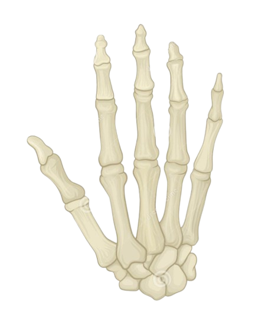

Este format din scheletul centurii scapulare și scheletul membrului superior liber (scheletul brațului, antebrațului și mâinii). Centura scapulară leagă membrul superior de torace și este formată din claviculă și scapulă (omoplat).
Clavicula este un os lung de forma literei „S“ culcată, care se articulează lateral cu scapula și medial cu manubriul sternal.
 



Scapula este un os lat, de formă triunghiulară, așezat cu baza în sus; lateral se articulează cu humerusul. Scheletul brațului este alcătuit din osul humerus.
Scheletul antebrațului este alcătuit din două oase lungi: radiusul și ulna.
Scheletul mâinii este format din 8 oase carpiene, 5 metacarpiene și 14 falange (pentru degetul I — police — există numai două falange).
